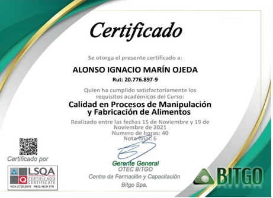

(15/12/2018 - 30/02/2019)
(10/08/2019 - 15/03/2020)
(23/06/2020 - 15/02/2021)
(16/05/2021 - 20/09/2021)
(04/12/2021 - 07/04/2022)
(20/12/2022 - 30/01/2023)
(01/02/2023 - 17/04/2023)
Enseñanza media completa
Egresado del colegio Adventista de Quilpue 2020
curso de manipulacion de alimentos
